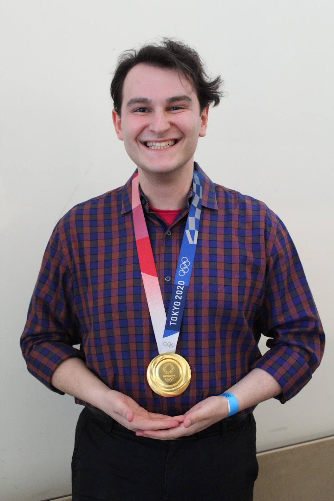

Image taken in 2024.
Medal belongs to Lee Kiefer.
I interviewed her and Gerek Meinhardt.
Research
I am a second-year Ph.D. student in the CS theory group at the University of Colorado Boulder advised by Dr. Joshua Grochow. I am interested in applications of algebra to complexity theory. This includes algebraic models of computation, geometric complexity theory, arithmetic circuits, tensors and matrix multiplication, algebraic combinatorics, polynomial computation, and algebraic proof systems.
Currently, I am thinking about the tensor isomorphism problem under the lens of representation theory and algebraic geometry.
Publications
Papers
- Graph Isomorphism and Representation Theory
- J. A. Grochow, J. Urisman
- ECCC Technical Report TR26-106, June 2026 (link)
- arXiv:2606.26244 [cs.CC, cs.DS, math.CO, math.RT], June 2026 (link)
Theses
- Representation Theory of Graph Isomorphism (2025)
- Master's Thesis, May 2025
- Numerical Semigroups and the Cayley Semigroup Membership Problem (2023)
- Honors Undergraduate Thesis, May 2023
Talks
- Representation Theory of Graph Isomorphism
- University of Cambridge, Algorithms and Complexity Seminar, June 2026
Teaching
University of Colorado Boulder
- Teaching Assistant, COMPSCI 3104: Algorithms, Spring 2026
- Teaching Assistant, COMPSCI 3434: Theory of Computation, Fall 2025
University of Massachusetts Amherst
- Instructor, CICS 110: Foundations of Programming, Spring 2025
- Instructor, CICS 191: First Year Seminar - Ethics in Computer Science, Fall 2024
- Teaching Assistant, COMPSCI 514: Algorithms for Data Science, Fall 2024
- Teaching Assistant, COMPSCI 501: Formal Language Theory, Spring 2024
- Teaching Assistant, COMPSCI 513/613: Logic in Computer Science, Fall 2023
- Undergraduate Course Assistant, COMPSCI 501: Formal Language Theory, Spring 2023
- Undergraduate Course Assistant, COMPSCI 311: Introduction to Algorithms, Fall 2021, Spring 2022, Summer 2022, Fall 2022
About Me
I am originally from San Francisco. I have been to 29 US states and 11 countries outside the US.
My Erdős number is 3. Paul Erdős → László Babai → Joshua Grochow → me.
My main hobby is fencing, which I began in late 2015. Feel free to ask me about it, at the risk of a very long conversation.